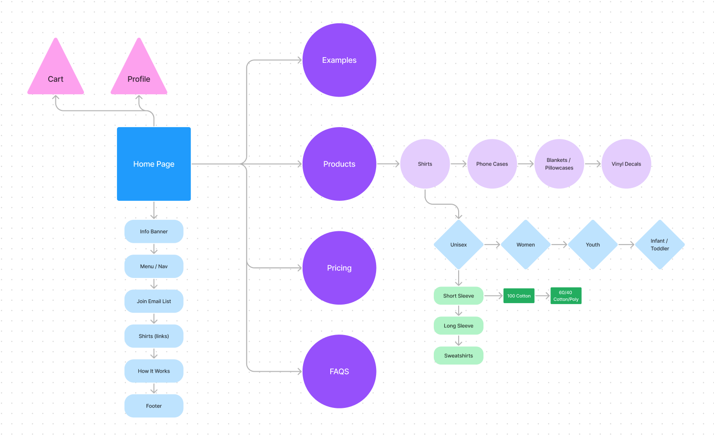

Think Custom T-Shirts
Site Purpose
The purpose of this site is to reach a new audience for Think Custom T-Shirts. They currently do not have an online presence, which means all orders are currently placed in person, on the phone, or through email. This leaves room for miscommunication and a the inability to serve a larger audience. I want this site to be a place for customers to place orders, find answers to any questions, get quotes, contact the think team members, join the email list for promotions, and see examples of past customer work. The goal is to give Think the website they need to expand their business.
Target Audience
The target audience of this site will be college students, professors, the local community, and large groups (i.e. teams, charities, events). Thinks current demographic is primarily the students and professors of BYUI with some local customers and businesses. I don’t want to lose the demographic they currently have so the goal is to just expand the audience. The site will be a helpful tool to those who can’t make it into the store in person to order shirts and will be for those across the country who will need shirts shipped to them. The age of the demographic will have a large range since this site will be for anyone who needs custom shirts. Instead of promoting to a specific gender, location, etc. we will promote to those who are artists, businesses, family reunions, or any event.
Site Map
Color Scheme
Primary Colors
Primary Colors: #1CA3DB
Primary Colors: #E81583
Primary Colors: #FBDD00
Primary Colors: #FFFFFF
Primary Colors: #231F20
Accent Colors
Accent Colors: #0F3C5E
Accent Colors: #A63C96
Accent Colors: #F48342
Accent Colors: #565656
Typography
Staatliches
This font will be used for the title and prominent text.
Raleway
This font will be used for headers and sub-headers.
Asap Condensed
This font will be used for the body copy.